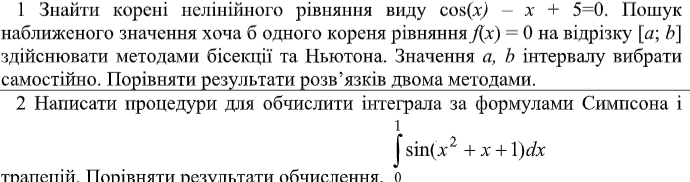
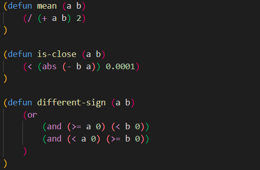
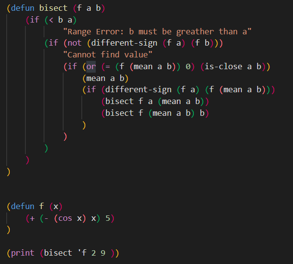
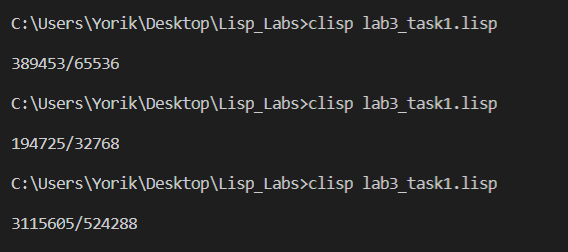
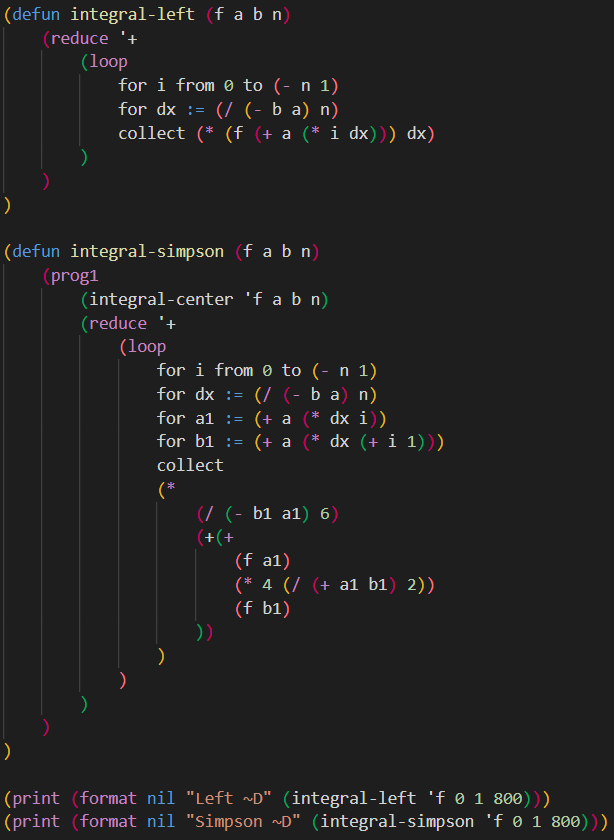
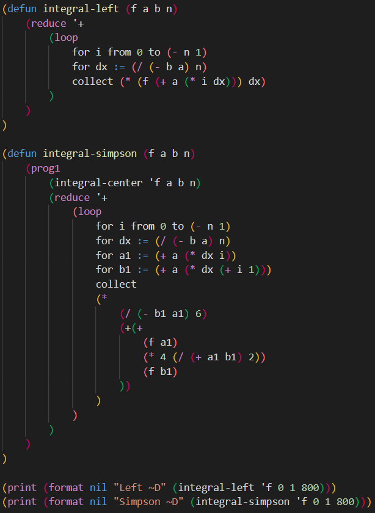
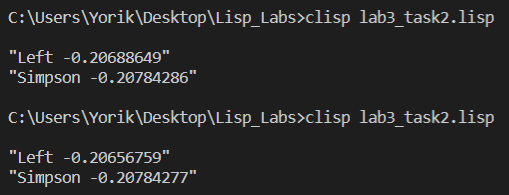

Мета
1. Написати процедури, що знаходять корені нелінійних рівнянь, використовуючи форми lambda, let, set!
2. Написати процедури, що обчислюють інтеграл функції за формулами прямокутників, трапецій, Симпсона (парабол)
Завдання
Хід роботи
Завдання 1
Приклад коду програми
 
Метод mean повертає середнє значення а та b.
Метод is-close перевіряє чи вираз b-a менший від 0.0001
Метод different-sign перевіряє значення a та b на те, чи вони більші або менші від 0.
Метод bisect повертає результат методу бісекції використовуючи вище написані функції та приймаючи в аргументи функцію та значення a і b.
Метод f це функція із завдання.
Приклад роботи програми
Завдання 2
Приклад коду програми
 

Функція f це функція із завдання.
Функція integral-center виконує обчислення інтеграла за формулою середніх прямокутників.
Функція integral-left виконує обчислення інтеграла за формулою лівих прямокутників.
Функція integral-simpson виконує обчислення інтеграла за формулою Сімпсона.
Результат виводиться на екран.
Приклад роботи програми
Висновок
На цій лабораторній роботі я ознайомився з формами lambda та let. Також я створив та запустив програму згідно до завдання, в якій використав здобуті навички.